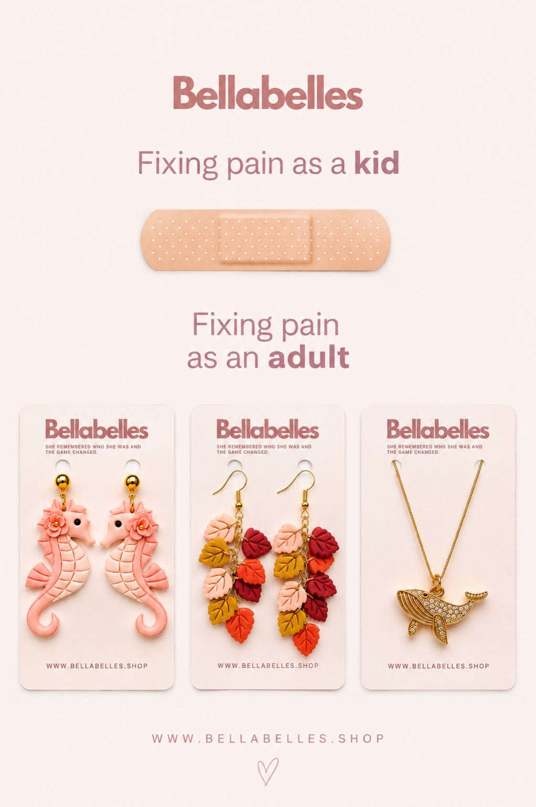

BRAND COLLABORATION / SOCIAL CONTENT / 2026
BellaBelles Egypt
One jewelry brand, several ways to tell its story.
When you’re creating content for a jewelry brand, it’s easy to rely on the same familiar formula: a close-up of the piece, a pretty background, and a line about how much someone needs it. I wanted the work I made for BellaBelles to explore more than one way of introducing the products. Sometimes the jewelry could be part of a personality. Sometimes it could be the punchline to a relatable idea. And sometimes the strongest choice was to let the details of the product do the talking.
I took part in the BellaBelles Egypt Creators Program in August and September 2026, developing a collection of social-first pieces across static design, a five-slide carousel, short-form video, and animation. These formats weren’t interchangeable. Each had a different pace, visual purpose, and relationship to the products. The work required both creative concepting and the practical production decisions needed to make each piece feel consistent, legible, and suitable for social media.
01 / Personality storytelling
Which BellaBelles Girl Are You?
The starting point for this carousel was a simple observation: people don’t always choose accessories because they match a trend. They also choose pieces because something about them feels familiar. A shape, color, or mood can remind you of the version of yourself you like dressing as. I built the carousel around that idea rather than presenting a conventional product lineup.
The five slides introduce three distinct personalities. The Seaside Sweetheart is paired with Blush Pony, The Autumn Muse with Autumn Cascade, and The Golden Girl with The Whale. Rather than describing these as three products to buy, the carousel gives the audience three moods to recognize themselves in. The closing slide asks which BellaBelles girl they are, turning the product presentation into a question that invites a response.
The sequencing matters. The cover introduces the premise before showing any personality result. The three middle slides share enough visual consistency to feel like one series, while allowing the individual names and pieces to stand apart. The final slide brings the reader back into the concept rather than ending with a generic shopping command. It works as a carousel because each swipe advances the same idea.
Swipe through the five slides.
02 / A more playful angle
Fixing Pain as an Adult
This piece takes a familiar childhood solution and contrasts it with the way an adult might reach for a little treat instead. The joke is deliberately uncomplicated: sometimes what looks like a small indulgence is exactly what someone wants after a difficult day. Jewelry becomes the grown-up version of a quick fix, without pretending to offer anything deeper than a playful moment.
The format is important here. Unlike the personality carousel, this idea needs to be understood in one glance. The copy and imagery share the work of delivering the joke, so neither should overpower the other. The point wasn’t to make an elaborate campaign out of a single observation; it was to create a standalone piece with a recognizable, social-media-friendly premise.

03 / Giving the products the attention
Seahorse earrings styling video
The seahorse earrings video takes a much closer view of the product. The interest comes from shape, movement, how the earrings sit when styled, and the small details that are easier to appreciate in motion than in a still image. Its job is not to carry a long story. It’s to make the product visually interesting enough to keep watching for a few seconds.
Short-form production
Autumn-leaf earrings styling video
The autumn-leaf earrings required a different visual character. The leaf shape is already expressive, so the styling and close-ups focus on helping that shape read clearly. Even when two videos share the same basic format, they shouldn’t feel like copies with different products inserted. The jewelry itself should influence the footage selected, the rhythm, and what detail gets the viewer’s attention.
Short-form production
Jewelry Wishlist animation
The Jewelry Wishlist animation turns a familiar feeling into a moving graphic: seeing pieces you like and mentally adding them to an ever-growing list. Unlike the styling videos, it isn’t built around physical product movement. It works through graphic pacing, sequencing, and a playful visual announcement. Including it alongside the videos shows the difference between editing moving footage and building motion into a designed composition.
What connects the pieces
The collaboration gave me the opportunity to approach the same product category through several formats without forcing all the content into one concept. The personality carousel asks the audience to identify with a mood. The static design relies on a joke. The product videos let the jewelry be the subject. The animation brings an idea to life through movement and typography. Across all of them, the larger task was to find an approach appropriate for the product and format, then make deliberate choices about how it was presented.